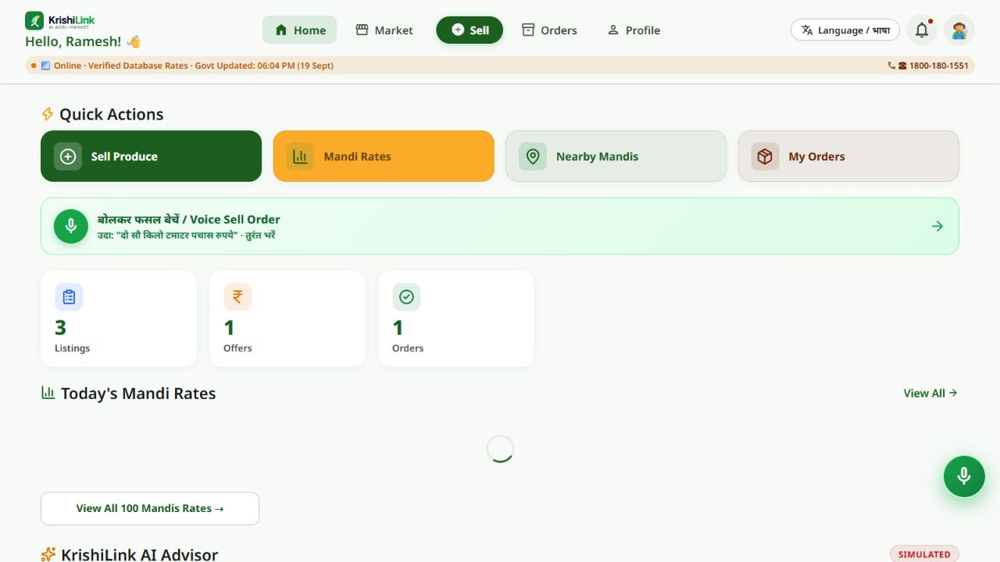
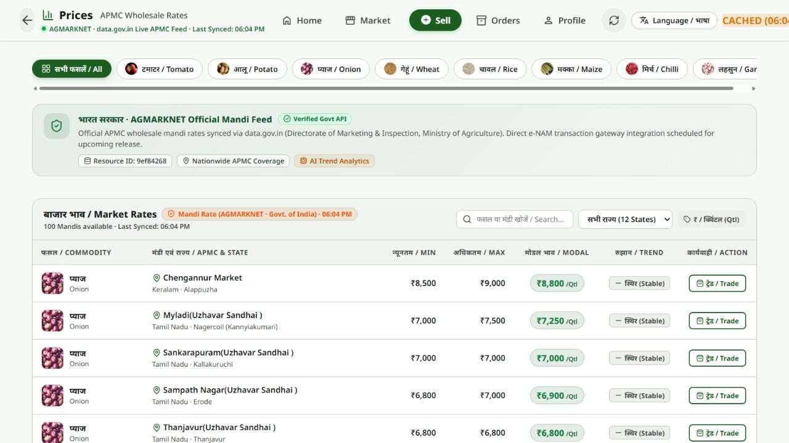
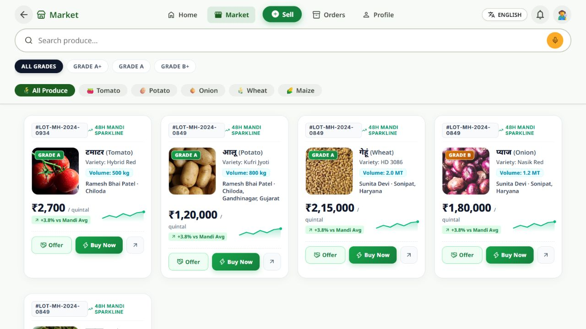
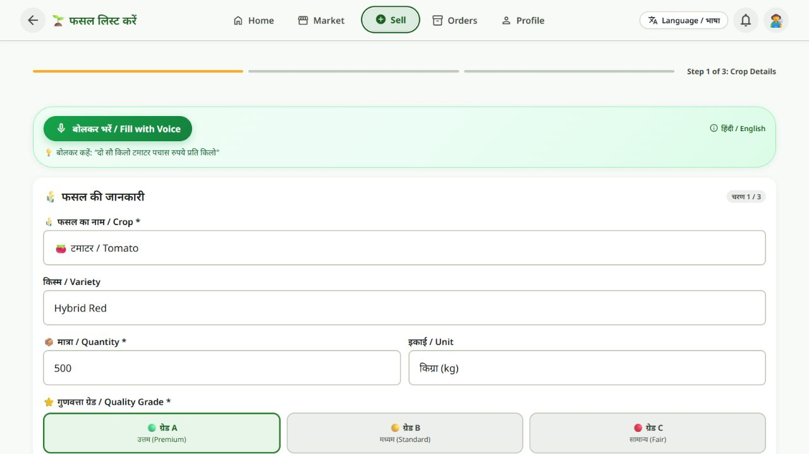

Compare before you decide.
Browse commodity prices by crop and state. The AGMARKNET integration includes cache, database, and demo fallbacks so the interface can explain where its data comes from.
KRISHILINK / AGRITECH / 2026
I worked on KrishiLink during Smart India Hackathon 2026 to bring market prices, produce discovery, and voice-assisted selling into one farmer-focused web experience.

THE PROBLEM
Farmers need market prices, buyers, and a way to list produce. Moving between disconnected services makes those tasks harder, especially when language and typing become barriers.
KrishiLink brings the workflow into one interface: inspect mandi rates, browse produce, and prepare a listing with guided fields or voice assistance.
THE EXPERIENCE
Browse commodity prices by crop and state. The AGMARKNET integration includes cache, database, and demo fallbacks so the interface can explain where its data comes from.
The marketplace groups produce by crop and grade, with quantity, price, and offer actions. Farmer screens bring listings and incoming offers together.
The selling form exposes voice entry. Server code supports Gemini audio extraction, Whisper transcription fallback, and a deterministic parser for produce, quantity, units, and price.
The interface offers Hindi, English, Hinglish, Marathi, Punjabi, and Gujarati choices, with large crop actions and a guided three-step listing flow.
INSIDE THE APP
Captured directly from the public farmer demo on 26 September 2026. Prices and listings are a snapshot, not current trading guidance. Open any screenshot for the full view.




IMPLEMENTATION
HTML, CSS, and JavaScript screens connect to an Express API for profiles, listings, offers, orders, and market data.
The source checks cached results and queries data.gov.in AGMARKNET. PostgreSQL persistence and documented demo data provide fallback paths when upstream services are unavailable.
Audio can be transcribed and parsed into structured listing fields. The implementation falls back through alternative services and a local parser when a model cannot respond.
THE STACK
CURRENT SCOPE
The public dashboard marks its advisor as simulated. The captured mandi screen reports cached data. Voice parsing is implemented in the source, but microphone capture, payment settlement, and real trades were not exercised for this showcase.
Direct e-NAM transactions are described in the app as an upcoming integration. The current release focuses on market discovery, produce workflows, and accessible interaction.
EXPLORE KRISHILINK